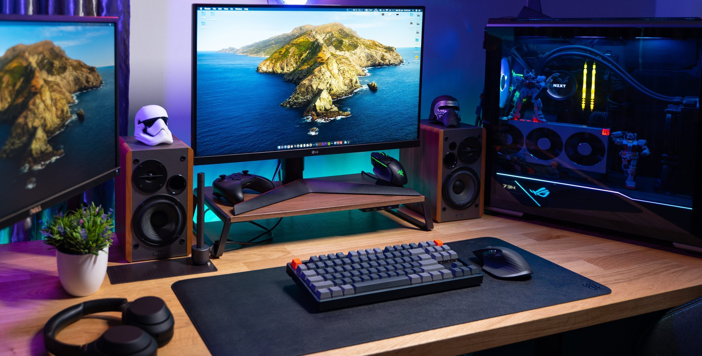

Las computadoras son dispositivos electrónicos diseñados para realizar una gran variedad de tareas, como trabajar, estudiar, navegar por Internet, utilizar programas, almacenar información y disfrutar de contenido multimedia. Su rendimiento depende principalmente de componentes como el procesador, la memoria RAM, el almacenamiento y la tarjeta gráfica.
En nuestra tienda encontrarás computadoras para diferentes necesidades y presupuestos. Contamos con equipos ideales para actividades cotidianas y de oficina, así como computadoras de mayor rendimiento para tareas exigentes, edición de contenido, diseño gráfico y videojuegos. Cada equipo ofrece diferentes características para que puedas elegir el que mejor se adapte a tus necesidades.

Son computadoras que se utilizan principalmente en hogares, oficinas y centros de estudio. Son cómodas para trabajar y realizar diferentes actividades.
Son computadoras diseñadas especialmente para jugar videojuegos. Tienen un buen rendimiento y permiten disfrutar de juegos con buena calidad.
Son computadoras que tienen sus componentes integrados en la pantalla. Ocupan poco espacio y tienen un diseño sencillo.
Volver al inicio